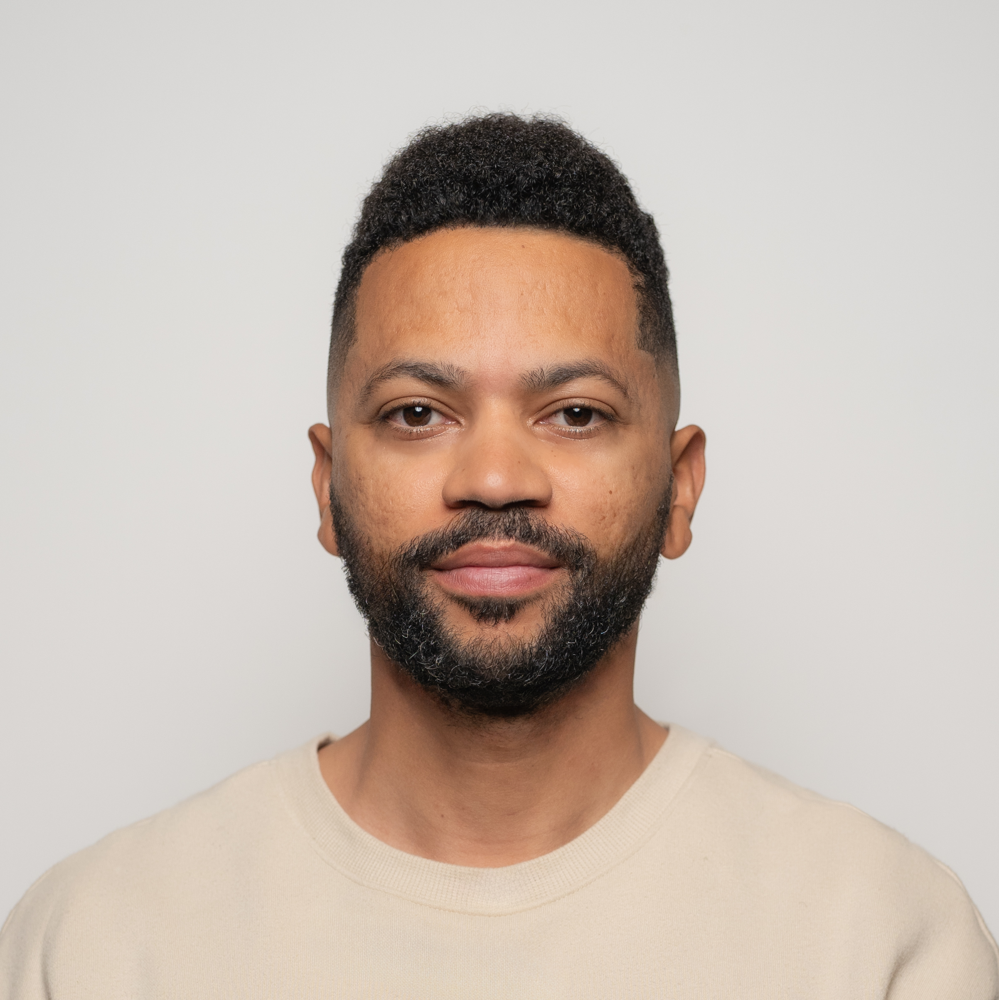

Jason Nunez
3517 Crocker Dr, Sacramento, CA, 95818 | (347) 837-7069 | JasonNunez23@Gmail.com
Summary
Seasoned emergency-room nurse with 10 + years of front-line experience in high-pressure hospitals and a proven record of leading teams, mentoring new nurses, and improving patient-care workflows. Blending clinical expertise with tech know-how, I co-founded the 78k-subscriber Nurses to Riches channel and built Map My Pay, a data-driven app that helps nurses maximize take-home pay across 1000 + U.S. cities. Skilled at project management, product development, and clear communication, I thrive on turning complex problems into practical solutions that boost both patient outcomes and nurses’ financial health.
Education
- Adelphi University | Garden City, NY | Sept 2010 - May 2012
- Bachelor of Science in Nursing
- Borough of Manhattan Community College | New York, NY | Sept 2007 - May 2010
- Associate of Arts & Science
Work experience
- Staff Nurse II - Emergency Department | Kaiser Permanente | Sacramento, CA | Jan 2018 - Present
- Handle high-acuity patients in a busy ER.
- Frequently assigned to high-level unit support and resource rows.
- Precept new nurses and help improve unit workflows.
- Collaborated on policy updates that boosted retention and patient outcomes.
- Staff Nurse - Emergency Department | Sutter Roseville Medical Center | Sacramento, CA | May 2017 - Nov 2017
- Adapted quickly to California practice standards after relocating from NYC.
- Delivered trauma-level emergency care and built strong interdisciplinary teamwork skills.
- Clinical Nurse - Emergency Department | New York-Presbyterian Hospital | New York, NY | Jan 2014 - Apr 2017
- Managed heavy patient loads in crowded urban ERs.
- Honed rapid triage, critical-thinking, and patient-education abilities.
- Stepped up as informal shift lead when needed, overseeing groups of nurses and support staff.
- Supervised shift operations for up to 200 nurses, ensuring safe staffing and quality compliance.
- Founder/CEO | Nurses to Riches, LLC | Sacramento, CA | Jan 2021 - Present
- Grew YouTube channel to 78k+ subscribers and launched the Nurses to Riches Accelerator (>$50 k revenue).
- Lead content strategy, manage editors, and mentor a community of nurses aiming for $200 k+ salaries.
- Founder/CEO | Map My Pay, LLC | Sacramento, CA | Nov 2024 - Present
- Built a tool that compares nursing pay, housing costs, and leftover income across 1000+ U.S. cities.
- Drive product vision and data roadmap; oversee dev team using Laravel, React Native, and AWS.
Skills
- Team leadership and shift coordination (up to 200 nurses)
- Precepting and mentoring new RNs
- Workflow and process improvement in busy ER settings
- Product planning & project management (Jira, GitHub, Slack)
- Mobile and app development team management
- Coordinating with company's senior software engineer to bridge business and tech goals
- Content creation & community engagement (YouTube, Instagram, TikTok)
Other